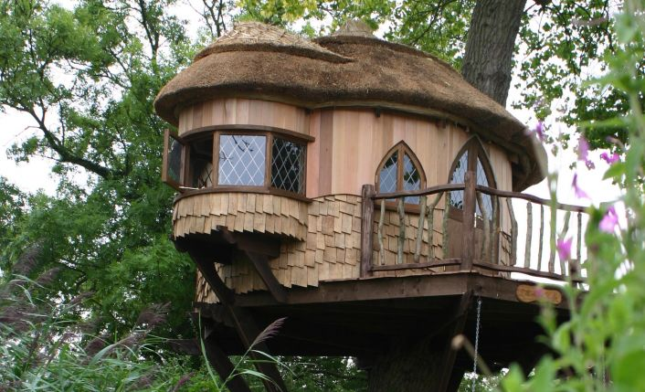
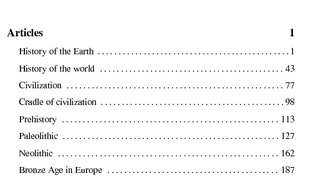

Custom Fish Tank
Tree House
Books to publish from Wikipedia
Backpacking Gear To Make
Wishing Well Grill
Birdhouse Cam
Glamping/Gypsy/Travellers
Traditional Wood Craft
Workbench
Projects
Mission Furniture Ideas
Hand-made tools
References
North Woods Cottage
HayBaleHome
A-Frame Tiny House
Off-grid Mechanicals Vault
Emergency Plans
3 day (Evacuation)
3 week (Power failure)
3 year (Plan a)
Temporary Retirement
Locations
Prep Timeline
Logistics
Reference
Opportunities
Figure 1: The kids picked this design.

Figure 2: Celtic Migration.
